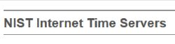
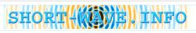

HTTP Forever A reliable page to trigger captive portals and test network connectivity on old devices that may not support HTTPS.
HTTP Forever A reliable page to trigger captive portals and test network connectivity on old devices that may not support HTTPS.
Wiby A search engine that only indexes simple, Web 1.0-style pages. I find it's a good resource for hobbyist research.
The Old Net A resource to access the wayback machine on a low-resource page. Ideal for any real web browsing on limited hardware. There are several other fun things to do on this web site.
Really Slick Links Page A great resource for some really fun links to explore. One of those is the webmaster Terry's personal page, from whom I got the inspiration to convert my homepage to the state it's in today. Lots of great screensaver's he's built on this website as well. Check them out!
Quad9 A privacy-focused DNS server. Quad9 includes malware protection, HTTPS for DNS, and IPv6. I highly reccomend switching your DNS to it.
NIST Server List I am fascinated by the hidden infrastructure that supports so much of our modern lives. There are some interesting links to break off from this webpage, as well as the chance to get nerdy and change your time server to the one closest to you. I like to use UT1 time, just because I can.
Short Wave Radio Listings This webpage has a great interface for finding fascinating things to listen to on your old shortwave radio. I love listening to overseas news broadcasts in other languages. One of these days I hope to catch a live numbers station.